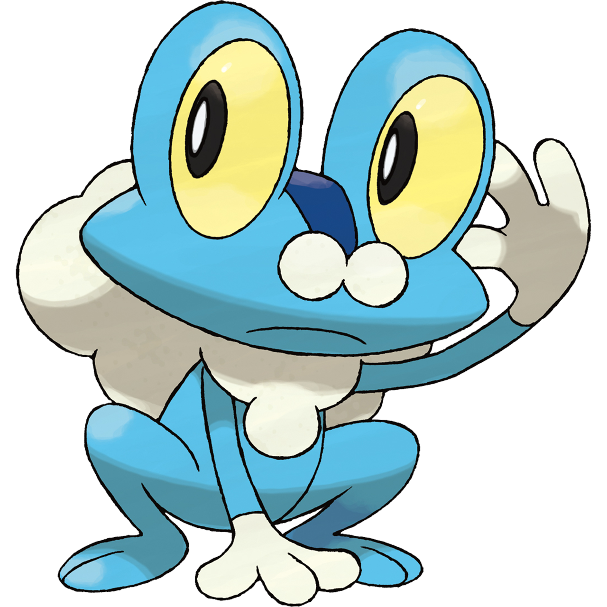
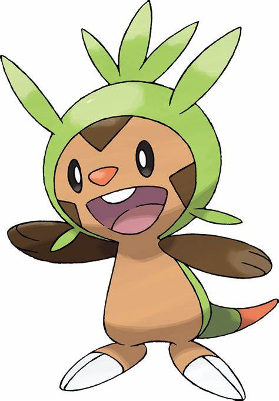
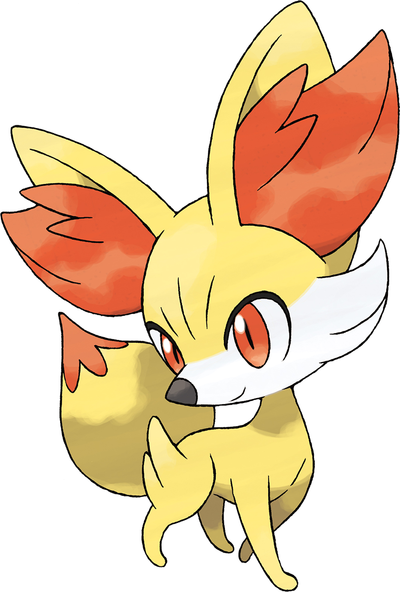

Les starters de la 6eme génération pokémon
Ici vous aller découvrir en détail les starters pokémon de XYZ

Grenousse est un Pokémon quadrupède qui ressemble à une grenouille. Sa peau est principalement bleu clair, à l'exception de ses mains qui sont blanches et d'une bande au milieu de ses yeux qui est d'un bleu plus foncé. Ses yeux sont noirs avec une sclère jaune et sont si gros qu'ils sortent à la verticale de sa tête. Il a une crinière de bulles sur le buste et le dos ainsi que deux petites bulles sur le nez. Il a trois doigts à chaque main et deux orteils à chaque pied.

Marisson est un Pokémon bipède à l'allure mammalienne. Son corps est principalement brun clair, à l'exception de ses bras et des marquages triangulaires sur son visage qui sont plus foncés. Il a des yeux ovales marron, un museau triangulaire rouge et des incisives semblables à celles des rongeurs. Ses bras ont trois doigts tandis que ses pieds ont deux longues griffes. Une solide carapace de couleur verte couvre son dos et s'étend autour de sa tête et jusqu'à sa queue, dont la partie visible est orange. Il y a un petit trou dans sa carapace à l'arrière de sa tête. Il a quatre épines qui ressemblent à des feuilles autour de la tête, ainsi qu'une épine à l'arrière de la tête qui se divise en trois parties.

Feunec est un petit Pokémon qui ressemble à un fennec. Il est principalement recouvert de fourrure jaune qui est plus longue sur ses hanches. Il a un museau blanc avec une touffe de fourrure sur chaque joue, de grands yeux orange et un nez pointu noir. Il a deux dents pointues sur la mâchoire supérieure visibles quand il ouvre la bouche. Des touffes de fourrure orange se trouvent à l'intérieur de ses grandes oreilles. Il a des petites pattes fines sans doigts visibles. Sa queue est duveteuse avec une extrémité orange.